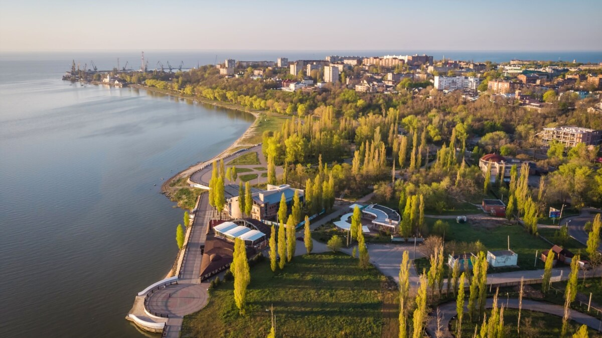

Таганрог - один из уникальнейших городов нащей страны, ведь, это IT-столица России! В городе находится более полутора тысяч IT-компаний. Только представьте при подсчёте кол-ва компаний на душу населения, Таганрог превосходит даже Москву!!! Но не только IT-сферой славится Таганрог, но и своей необыкновенной историей
Tаганрог был основан Петром Первым в 1698году. В городе до сих пор сохранилось множество строений того времени, которые создают неповторимую атмосферу в городе. История этого города, поистине уникальная и неповторимая заслуживает отдельного внимания.